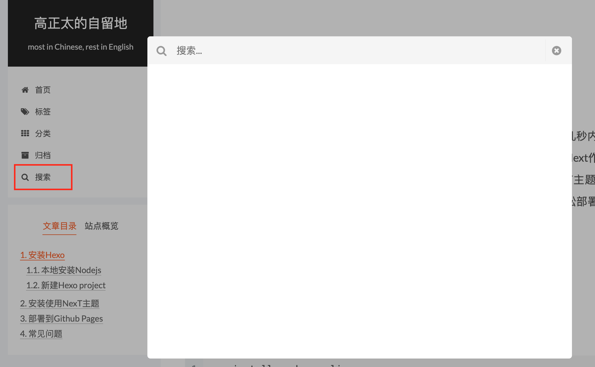
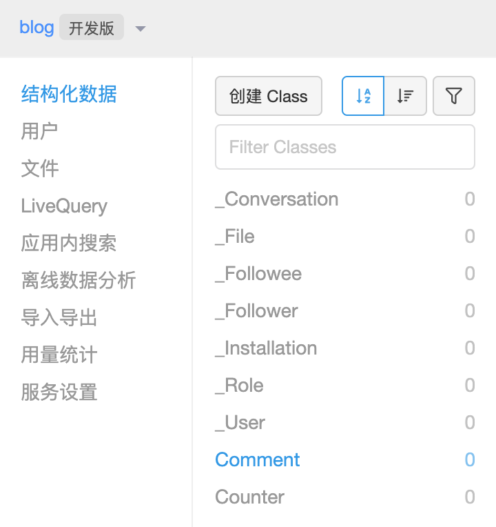
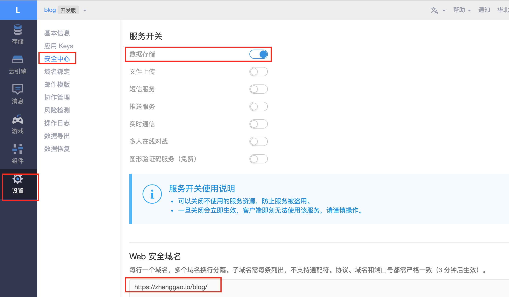
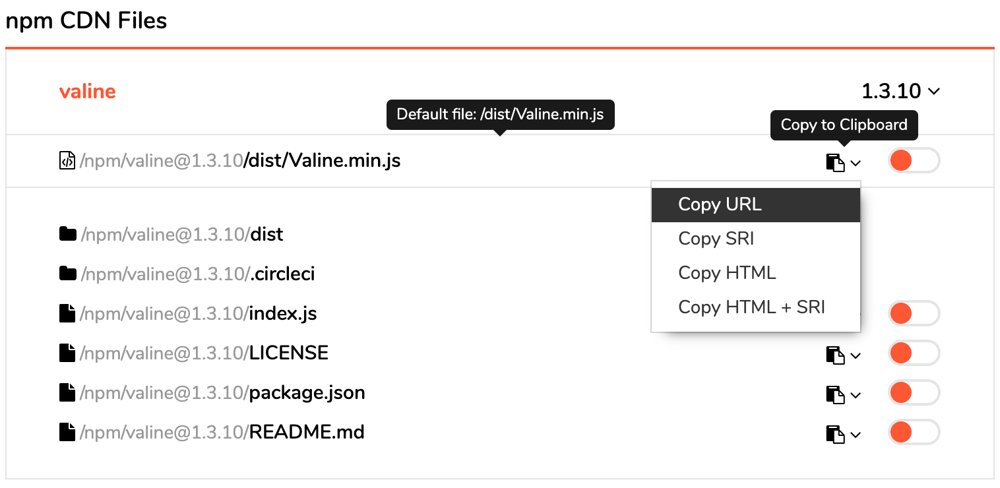
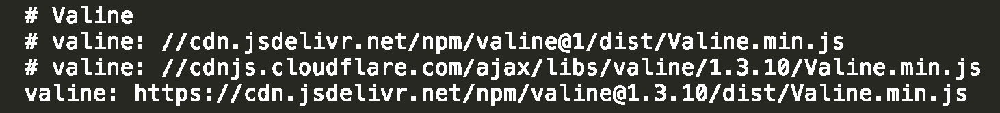
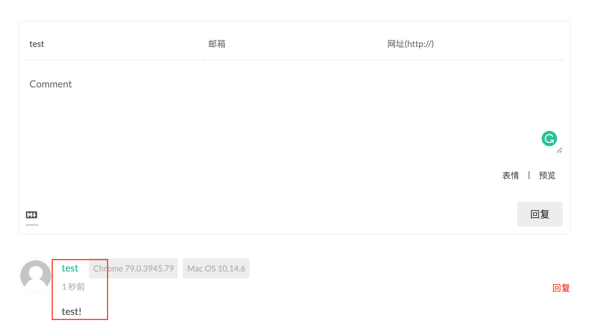
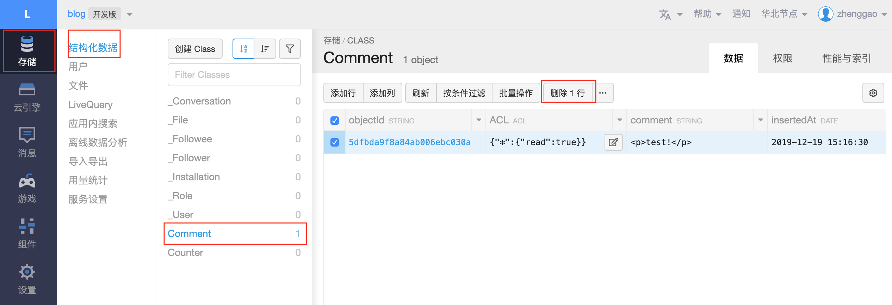
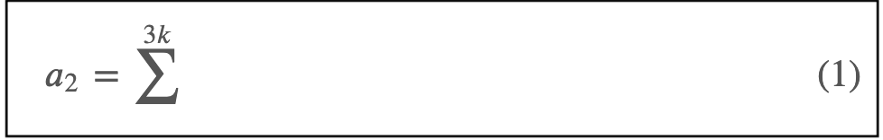
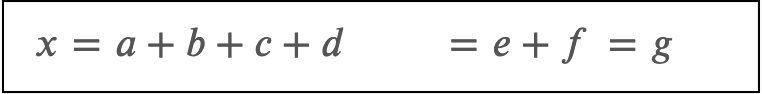
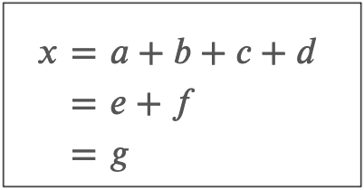

Hexo是一个快速、简洁且高效的博客框架。Hexo使用Markdown解析文章，在几秒内，即可利用靓丽的主题生成静态网页。Hexo 本身是基于Nodejs的，非常便于主题的移植和扩展。Next作为近年来相当受欢迎的Hexo主题之一，被广泛的用作博客模板。本文介绍如何安装Hexo的NexT主题并且部署在Github Pages上面。完成之后，我们能够方便的在本地Markdown里面写博客，并且轻松部署到远程Github上面去。
安装Hexo
本地安装Hexo
作为Mac用户，当我们已经安装好Nodejs之后，安装Hexo 框架非常简单，只需要执行一下命令即可：
1 | npm install -g hexo-cli |
新建Hexo project
安装好Hexo之后，在terminal中run以下命令建立一个blog 文件夹，里面就是Hexo的整个project:
1 | $ hexo init blog |
新建完成后，指定文件夹blog 的目录如下：
1 | . |
这里面的_config.yml，是存在于Hexo 框架之中的，我们称之为站点配置文件。里面的Site 部分内容，我们可以改一些类似language, title 之类的信息。
安装好之后，我们测试是否Hexo框架安装成功，可以部署一下当前的project。默认的Hexo 框架的主题叫做landscape。 通过run 以下命令可以生成静态的html 网页, 存储在blog/public目录下：
1 | hexo generate |
或者
1 | hexo g |
部署到本地服务器可以run 以下命令：
1 | hexo server |
或者
1 | hexo s |
在浏览器地址栏中输入http://localhost:4000/ （默认端口是4000），如果能够看到看到正常网页，说明初始化的Hexo博客搭建成功了。如果出现端口被占用的错误，需要run：
1 | lsof -i :4000 |
来找到对应的进程ID，然后kill 进程：
1 | kill -9 pid |
不同电脑间迁移
如果需要在另外的电脑上继续编辑博客的话，需要重新进行一些设置。
- 把自己博客的源代码复制到新的电脑中去。此处建议先把自己的博客源代码上传到github中（比如 https://github.com/RoyZhengGao/blog-source-code ），然后在新的电脑上用git 命令把源代码clone下来。这样的话，本身的源代码中设置.gitignore文件，能把一些生成的文件过滤掉，而只保存核心的源文件。
- 在新的电脑中需要重新安装nodejs:
brew install node - 重新安装hexo-cli插件：
npm install -g hexo-cli - 把之前的安装需要的npm包再重新装一遍：
npm install hexo --save
之后，在新的电脑上就可以继续写博客了！
安装使用NexT主题
DIY NexT主题
我们需要用我们自己选择的NexT主题，因此要把站点配置文件中的themes 改成NexT 主题：
1 | # Extensions |
同时，需要从Github上面下载主题对应的源代码，通过run以下命令就可以把对应的NexT源代码下载到博客文件夹blog 中/themes/ 里面:
1 | $ cd blog |
进入next 文件夹，我们发现还存在一个同样叫做_config.yml 的配置文件，我们称之为主题配置文件。我的博客是选用的Pisces 主题，因此需要选择对应的主题配置文件中的scheme 如下所示：
1 | # Schemes |
Side bar 添加标签/分类
(1) 在side bar 中开启标签/分类选项。在主题配置文件 _config.yml中配置菜单按钮，找到menu属性，做以下配置：
1 | menu: |
(2) 执行命令hexo s，本地预览我们的博客页面，会发现，点击分类、标签这几个页面的时候，会显示404。我们需要在project的根目录下面新建对应的分类、标签的page文件：
1 | hexo new page tags |
执行完后，我们可以在hexo/source目录下看到创建的2个文件夹，分别为tags和categories。
(3) 两个文件夹中分别生成了一个 index.md 初始文件，默认包含了 title 和 date 字段，我们需要给每一 index.md 文件添加上 type 字段，如下所示：
1 | --- |
1 | --- |
Side bar 添加本地搜索
(1) 安装hexo-generator-searchdb，在站点的根目录(blog 文件夹)下执行以下命令：
1 | $ npm install hexo-generator-searchdb --save |
(2) 编辑站点配置文件(blog/_config.yml)，新增以下内容到任意位置：
1 | search: |
(3) 编辑主题配置文件(blog/themes/next/_config.yml)，找到 local_search 属性，开启本地搜索功能：
1 | # Local search |
如果出现如下画面所示，表明本地搜索已经安装成功：

新建post
在Hexo project的文件夹blog 下面，run以下命令新建一个post:
1 | hexo new "post" |
在博客blog 目录下的/source/_posts/ 文件夹下，可以看到已经生成了标题为post.md 的博客文件。在Markdown文件中直接写博客内容即可。
在post.md 文件中设置tags和categories属性：
1 | title: post |
为了添加阅读全文小按钮，可以在post中想要隐藏起来的部分开头加上以下内容：
1 | <!--more--> |
通过以下配置来在post中引入图片：
(1) 在全局配置文件（hexo/_config.yml)中将post_asset_folder设置为true；
(2) 创建文章（在创建的时候，会在hexo/source/_post目录下，生成一个XXX.md文件和一个XXX的文件夹）：
1 | hexo new "XXX" |
(3) 把XXX这个博文需要展示的图片放在XXX文件夹目录下；
(4) 在XXX.md文件中引入图片的方式：
1 | <img src="search.png" alt="search" width="1200"/> |
安装Valine 评论系统
通过对比gitment, hypercomments和Disqus，最终确定使用Valine 评论系统。
(1) 注册 LeanCloud:
Valine 是基于 LeanCloud 作为数据存储的，所以需要注册一个账号。注册完成后，进入控制台：
- 创建一个应用，输入应用名称，选择 开发版，点击创建。
- 创建完成后，打开应用，左边的存储，查看 数据下面有没有 Counter 和 Comment 两个 Classes，如果没有，点击创建 Class。创建完成后，如下：

(2) 如下图所示，点击“设置”，找到“安全中心”，在服务开关，除了“数据存储”，其它的全关掉，在 “Web 安全域名”，填写博客的域名地址：

(3) 点击同一栏中的 “应用Keys”，获取到 “AppID” 和 “AppKey”。
(4) 搜索 valine ，配置 appid 和 appkey 为 LeanCloud 分配的值，language默认为中文（zh-cn）并且实际上并不能支持英文（en）。
(5) 修改 valine.min.js 的 cdn 文件地址，到这里 https://www.jsdelivr.com/package/npm/valine 这个地址选择最新版本的Valine，然后获取cdn地址，修改到 主题配置文件 _config.yml 即可。如下图所示：

_conig.yml 文件修改的位置：

部署完成后，即可无需登录即可发表评论，如图所示：

(6) 删除评论只能在LeanCloud 中进行。点击“存储”，进入“结构化数据”中的“Comment” 表格，就可以看到相对应的评论数据。点击相关数据可以进行删除。具体见下图：

启用emoji
将 markdown 变成 html 的转换器叫做markdown渲染器 。 Hexo默认是采用hexo-renderer-marked,这个渲染器不支持插件扩展，当然就不行了，还有一个支持插件扩展的是 hexo-renderer-markdown-it，这个支持插件配置，可以使用markwon-it-emoji 插件来支持emoji。需要将原来的 marked 渲染器换成 markdown-it渲染器。所以我们可以使用这个渲染引擎来支持emoji表情。
(1) 首先进入博客目录，卸载hexo默认的marked渲染器，安装markdown-it渲染器，运行的命令如下：
1 | $ npm un hexo-renderer-marked --save |
(2) 然后安装 markdown-it-emoji 插件：
1 | npm install markdown-it-emoji --save |
(3) 编辑站点配置文件，在末尾添加如下内容：
1 | # Markdown-it config |
添加阅读时长
新版的NexT模板弃用了以前的post_wordcount统计文章的字数，阅读时长等等，新版本该插件废弃，并且内置了symbols_count_time作为替换。具体可见安装配置。
(1)安装插件：
1 | npm install hexo-symbols-count-time |
(2)主题配置文件中，已经有对应阅读时长，统计字数的参数设定，可以查看下是否已经存在。如果是中文的博客的话，建议awl=2并且wpm=300。英文的话，为awl=4并且wpm=275。
1 | symbols_count_time: |
(3)在主题配置文件中加上以下设置：
1 | symbols_count_time: |
编辑数学公式
(1) 更换markdown渲染引擎，由marked改为更为轻量级的kramed：
1 | npm uninstall hexo-renderer-marked --save |
你可以在/node_modules里面搜索一下你是否安装了这两个插件（注意：不要安装pandoc插件，如果有，请卸载，此插件兼容性不太好，经常导致报错）：
1 | npm uninstall hexo-renderer-pandoc --save |
(2) 找到/node_modules/kramed/lib/rules/inline.js把第11行的escape变量的值做相应的修改：
1 | //escape: /^\\([\\`*{}\[\]()#$+\-.!_>])/, |
这一步是在原基础上取消了对,{,}的转义(escape)。同时把第20行的em变量也要做相应的修改。
1 | //em: /^\b_((?:__|[\s\S])+?)_\b|^\*((?:\*\*|[\s\S])+?)\*(?!\*)/, |
(3) 打开Mathjax开关，在/theme/next/_config.yml 中把enable改为true
1 | # MathJax Support |
(4) 在文章开头设置mathjax开关，只有需要编辑数学公式的文章页面才加载mathjax渲染，这样不需要渲染数学公式也不会影响加载速度。
1 | title: xxxx |
假如你不想每篇文章都手动打上mathjax: true，那么你可以在/scaffolds/post.md中修改，添加上mathjax这一项：
1 | --- |
这样你每次写博客时Front-matter都会有这一项(实际上我们修改的就是博客Front-matter的模板)
(5) 显示数学公式序号。我们经常需要对行间公式编序号，这样会方便我们的语言叙述(可能是习惯于LATEX），要在我们博客上显示序号，只需要在/theme/next/layout/_third-party/mathjax.swig中加上下面这段代码：
1 | <script type="text/x-mathjax-config"> |
然后在markdown的tex公式编辑里面只要使用equation环境的公式就会被编号（两个$符号的简单公式不会有编号）：
1 | \begin{equation} # 此标签如果替换成$$的话 不会有编号 |
显示结果如图：

对于其他的存在于文字内的数学公式来说，需要用两个$$之内即可。比如$a^2$:
1 | $a^2$ |
对于多行公式来说，\begin{equation} 不适用，此时需要改回两个$符号（不知道为什么原因）。但是，如果公式如下的话，会导致所有公式内容放在一行：
1 | $$ |
显示结果如图：

可以看到，换行并未起作用，这是因为 Hexo 对 Markdown 文件的处理实际上分为两个步骤：
- Hexo 中的 Markdown 引擎把 Markdown 变为 html 文件
- MathJax 负责解释 html 的数学公式
第一步中，由于 backslash 在 Markdown 属于特殊字符，用于字符转义，所以两个 backslash 经过 Markdown 引擎处理，只剩下一个，等到 MathJax 引擎处理时，实际上 MathJax 只看到一个 backslash，MathJax 把它当作 LaTeX 中的空格，因此我们见到了上图所示的渲染结果。
知道了渲染错误的原因，解决办法也很简单，就是用四个 backslash 代替两个 backslash，确保 MathJax 的引擎看到的是两个 backslash。同时align 标签本身提供公式编号，如果不想加编号的话，我们可换成aligned 标签。也就是把上述代码变成：
1 | $$ |
显示结果如图：

部署到Github Pages
(1) 新建一个仓库，仓库名为 RoyZhengGao.github.io（这个仓库的名称必须严格按照 username.github.io 的格式来命名）。点击刚创建好的那个仓库(进去仓库里面），点击settings，找到Github Pages 选项，选择Source 选项，默认是master branch。这样Github Pages的默认路径就是http://RoyZhengGao.github.io。
本文默认本地机器已经装好git 并且已经配置连接好对应的Github账号。
(2) 修改站点配置文件。在blog文件夹下，找到_config.yml文件，修改里面的deploy属性(目的是将本地blog项目放到Github上)。注：【如果repository中填写的是https协议的，hexo d 上传代码到Github时有下面类似错误，推荐将repository改为ssh的链接】
1 | deploy: |
(3) 安装hexo-deployer-git 插件，目的是将代码快速托管到Github上：
1 | npm install hexo-deployer-git --save |
(4) 将blog项目托管到Github上:
1 | hexo clean // 清除缓存文件 (db.json) 和已生成的静态文件 (public) |
Github 创建多个博客
如果仓库名username.github.io已经被别的repository 占用，为了创建新的博客，我们可以在Github上面随便创立一个repository，比如创立一个叫做blog的repository。此时，需要改动上传Github 的路径到：
1 | deploy: |
同时，如果博客网站存放在子目录中，例如 http://yoursite.com/blog，则请将站点配置文件中的 url 设为 http://yoursite.com/blog 并把root 设为 /blog/。
1 | url: http://yoursite.com/blog |
其余部署步骤和普通方式部署博客的步骤一致。最终，博客网址将会是http://RoyZhengGao.github.io/blog/。
常见问题
- Q: 如何更改post中的字体大小？
A: 在NexT.Pisces v7.6.0的版本中，目前没有找到正确的方法来只改变post的字体大小。相关文档1和相关文档2虽然有进行说明，但是并不能正确改正。目前的感觉是应该改主题配置文件_config.yml中的font部分以及主题对应的style文件 /themes/next/source/css/_variables/base.styl. 仍需要进一步研究。
查看source code 后发现，其字体比较大的原因是由生成的main.css中以下代码控制的。当把页面缩小到1200px以下之后，font size自动缩回为1em。补充：最终发现其原因在于1
2
3
4@media (min-width: 1200px)
.post-body {
font-size: 1.125em;
}source/css/_common/components/post/post.styl中的如下代码：即当页面大于1200px时，自动把font size 转化为large的size。改动其为1
2
3+desktop-large() {
font-size: $font-size-large;
}font-size: $font-size-base即可。参考issue可见https://github.com/theme-next/hexo-theme-next/issues/1165。
参考文献：